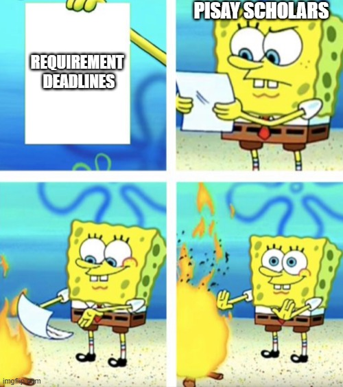

Image-based Memes
Introduction
Now, what is an "image-based meme"? It's basically a picture with some text in it, effectively changing the meaning of the picture. Let us take our first meme from the homepage.
SpongeBob throwing a paper in a fire
This is the meme from the homepage:  This is basically a satirical meme directed to Pisay students, SpongeBob representing Pisay students, the paper representing their requirement deadlines, and SpongeBob throwing the paper in the fire represents Pisay students' ignorance of their requirement deadlines. (like me, who made this on Saturday.)
Origin
This below is the original picture:
This is the original template, 4 panels with SpongeBob reading the paper and throwing it in the fire.
This originated from the SpongeBob SquarePants episode: "Party Pooper Pants", where Patchy the Pirate, Spongebob's "biggest fan", tries to send SpongeBob an invitation to his party, but since SpongeBob lives underwater, the ink on the invitation goes all over the paper.
It's also ironic that SpongeBob says "whoever sent this has no idea about the physical limitations of being underwater" as a response to the ink dissolving underwater, while keeping a fire underwater, which is ironically contradicting to "the physical limitations of living underwater".
As you can see, the meme above and the origin have different contexts, the meme above being Pisay students' ignorance of requirement deadlines, and the origin being SpongeBob not being able to understand the handwriting.
This is fine
Another nice meme, this meme shows an unbothered dog inside a burning house, with it quoting "This is fine".
Usage
This meme is usually used when a person is fine as "danger" approaches.
Here is one example:
This meme describes the incident that happened inside the CBZRC campus, where 2 earthquakes happened on 2 consecutive days, having roughly the same time, while the students being "fine" with that coincidence.
Drakeposting
A meme you will probably see once when you watch YouTube meme compilations, this meme involves using Drake as a reaction to some statement, usually a yes and no. Here is a modified example of the meme:
This is the Drake meme, except I photoshopped Nathan's face in it, so this isn't the original. This is a satirical meme directed to his "joke" about the word "Studying". Nathan jokes with the word studying by using it in two ways, "Studying" and Studying. He says he's "Studying" while playing games, and says Studying when he's actually studying.
This means that his reaction to Studying is the "Drake No reaction" while his reaction to "Studying" is the "Drake Yes reaction"
Origin
This meme was taken from one of Drake's music videos, Hotline Bling.His dance moves were cut and we now ended up with the yes and no reaction.